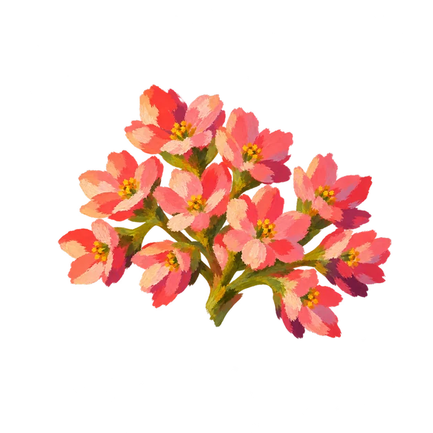
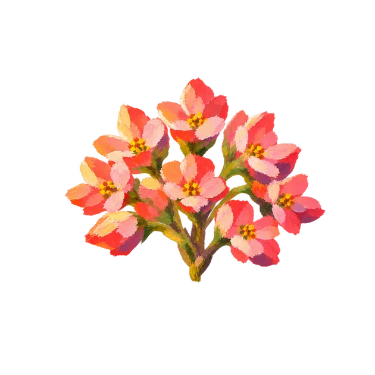
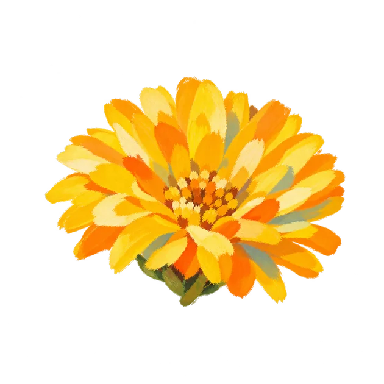
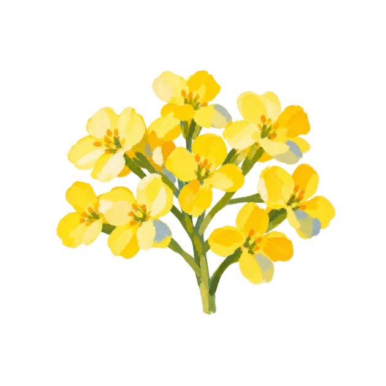
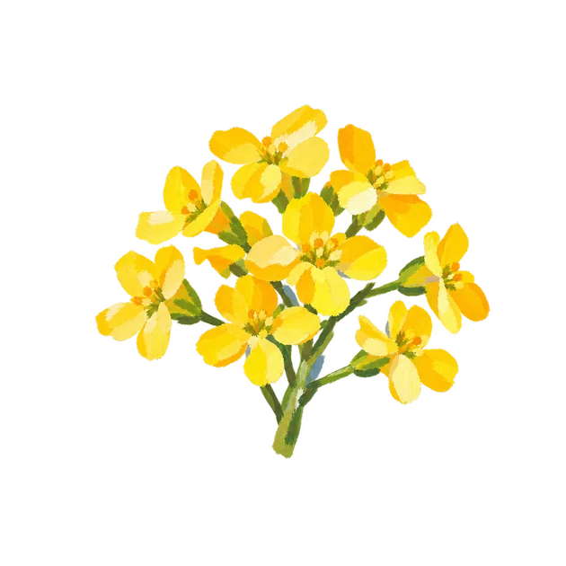
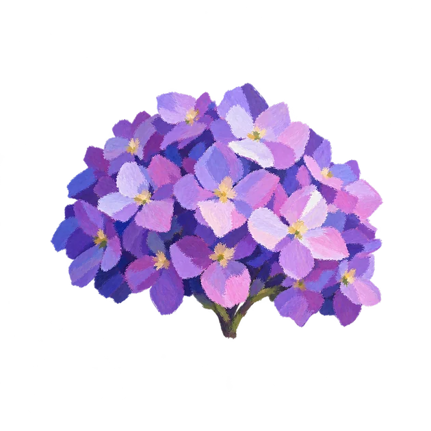
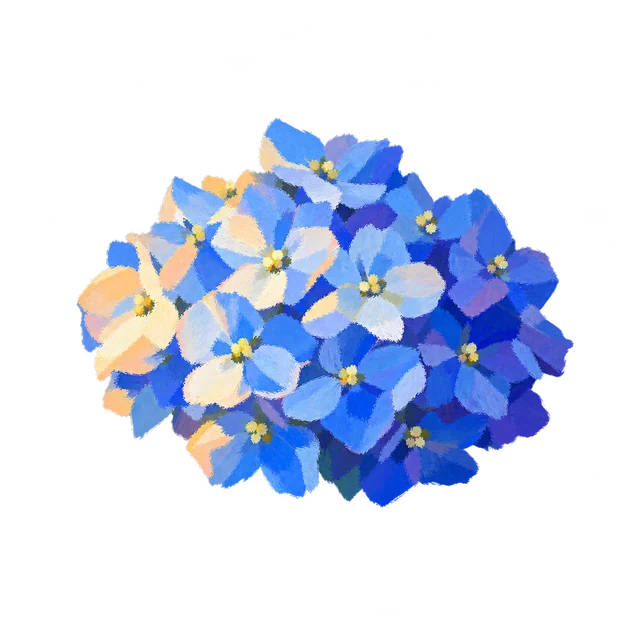
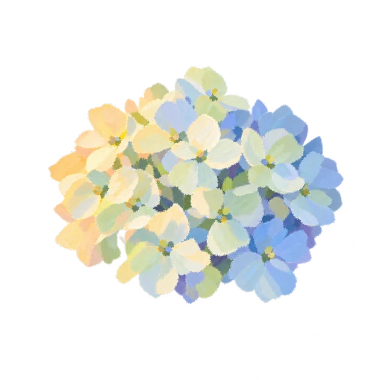

BG01 / LT01 · F01
동백꽃 A · 진홍
노을 · 레드 · 왼쪽 앰버빛 · 보라 그림자
 만개 PNG 받기 ↓
만개 PNG 받기 ↓MAZELAND JEJU · 2026.10.22 · v43
‘3배 더 추상적인 꽃’ 요청을 반영해 새로 그린 유화 꽃입니다. 만개16종을 먼저 크게 정리했습니다. 이미지를 클릭하면 투명 원본을 확대해 볼 수 있습니다.
BG01 / LT01 · F01
노을 · 레드 · 왼쪽 앰버빛 · 보라 그림자
만개 PNG 받기 ↓BG01 / LT01 · F02
노을 · 레드 · 왼쪽 앰버빛 · 보라 그림자
만개 PNG 받기 ↓BG01 / LT01 · F03
노을 · 레드 · 왼쪽 앰버빛 · 보라 그림자

만개 PNG 받기 ↓BG01 / LT01 · F04
노을 · 레드 · 왼쪽 앰버빛 · 보라 그림자

만개 PNG 받기 ↓BG02 / LT02 · F05
낮 · 옐로우 · 왼쪽 위 아이보리빛 · 하늘색 그림자
 만개 PNG 받기 ↓
만개 PNG 받기 ↓BG02 / LT02 · F06
낮 · 옐로우 · 왼쪽 위 아이보리빛 · 하늘색 그림자

만개 PNG 받기 ↓BG02 / LT02 · F07
낮 · 옐로우 · 왼쪽 위 아이보리빛 · 하늘색 그림자

만개 PNG 받기 ↓BG02 / LT02 · F08
낮 · 옐로우 · 왼쪽 위 아이보리빛 · 하늘색 그림자

만개 PNG 받기 ↓BG03 / LT03 · F09
밤 · 퍼플 · 오른쪽 위 은빛 · 코발트 그림자
 만개 PNG 받기 ↓
만개 PNG 받기 ↓BG03 / LT03 · F10
밤 · 퍼플 · 오른쪽 위 은빛 · 코발트 그림자
만개 PNG 받기 ↓BG03 / LT03 · F11
밤 · 퍼플 · 오른쪽 위 은빛 · 코발트 그림자

만개 PNG 받기 ↓BG03 / LT03 · F12
밤 · 퍼플 · 오른쪽 위 은빛 · 코발트 그림자
만개 PNG 받기 ↓BG04 / LT04 · F13
아침 · 블루 · 왼쪽 금빛 · 푸른 그림자
 만개 PNG 받기 ↓
만개 PNG 받기 ↓BG04 / LT04 · F14
아침 · 블루 · 왼쪽 금빛 · 푸른 그림자

만개 PNG 받기 ↓BG04 / LT04 · F15
아침 · 블루 · 왼쪽 금빛 · 푸른 그림자
만개 PNG 받기 ↓BG04 / LT04 · F16
아침 · 블루 · 왼쪽 금빛 · 푸른 그림자

만개 PNG 받기 ↓